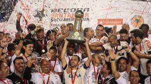

2 Mundiais (2000 e 2012)

1 Libertadores (2012)
1 Recopa (2013)

7 Brasileiros (1990, 1998, 1999, 2005, 2011, 2015 e 2017)

3 copa do Brasil (1995, 2002 e 2009)

30 Campeonatos Paulistas (1914, 1916, 1922, 1923, 1924, 1928, 1929, 1930, 1937, 1938, 1939, 1941, 1951, 1952, 1954, 1977, 1979, 1982, 1983, 1988, 1995, 1997, 1999, 2001, 2003, 2009, 2013, 2017, 2018, 2019 e 2025)